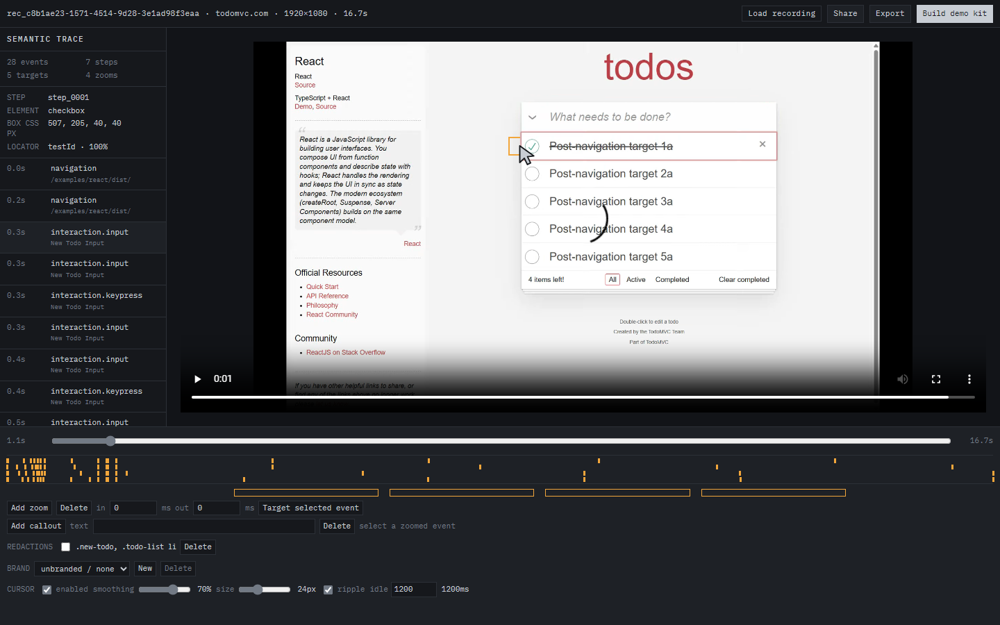

It records the element, not the pixel.
Every screen recorder saves pixels and throws away everything the browser already knew. Cutscene records a Chrome tab and the DOM events behind it, together.
Ordinary recording
A coordinate. The editor infers the rest.
Cutscene
- Step
- step_0005
- Element
- checkbox
- Box css px
- 467, 424, 40, 40
- Locator
- testId · 100%
It is not guessing.
It wrote the element down.
One capture. Then it keeps paying.
The trace holds clicks, inputs, navigation, scroll, viewport changes, ranked locators, element bounds and clock‑sync markers. Everything below is generated from that one file, so nothing can drift out of step with anything else.
- MP41080p H.264, element‑locked zooms baked in
- README GIFone global palette, no flicker
- Interactive guidestatic ZIP, pauses at every recorded click
- Step docswritten from accessible names, never a language model
- Screenshotscropped to the element that was clicked
- Playwright skeletonthe same ranked locators, as a test

It already knew this.
Every element you touched carries its role, accessible name and ranked locators. Read them back and the recording audits the path it just walked. This is the real report from the TodoMVC capture on this page.
Recording quality report
Derived from the recorded trace. No page was re‑inspected to produce this.
Interactions on elements with no accessible name (5)
step_0001at 1.2s checkbox exposes no accessible namestep_0002at 4.6s checkbox exposes no accessible namestep_0003at 7.3s checkbox exposes no accessible namestep_0004at 9.9s checkbox exposes no accessible namestep_0005at 12.6s checkbox exposes no accessible name
Five checkboxes on the critical path of a site everyone uses as a reference implementation, none of them announced to a screen reader. The recording found it at zero cost, because the fields were captured on day one and ignored for months.
The application changes
<button data-testid="create-report">Create report</button>
- <button data-testid="export-csv">Export CSV</button>
- <button data-testid="archive">Archive</button>
+ <button data-testid="csv-export-button">Export CSV</button>Replay exit 1
2 steps matched
1 step drifted Export CSV · role[1]
1 step orphaned Archive · no locator resolved
Replay --heal
healed step_3 testId → role
3 steps matched
1 step orphaned Archive · still gone
It promotes the locator that actually resolved and writes the trace back, so the rename is fixed for good. The deleted button has nothing left to promote, so the run still fails. It repairs what it can and refuses to hide what it cannot.
A stale screen recording looks fine right up until someone notices. A stale Cutscene demo fails like a failing test.
Go and click it.
The interactive demo is a static file exported by the editor. It pauses the video at every recorded click and waits for you to hit the real element. No install and no account.
Measured, and reproducible with pnpm test
- Sampled zooms on the correct element
- 10 / 10
- Mean zoom timing error
- 0.258 frame
- Max interactive hotspot edge error
- 0.014435 px
- Tests passing
- 315
What it will not do
- Chrome only.
- DOM‑based web apps only. Canvas, WebGL and maps fall back to pixels.
- Cross‑origin iframes cannot be traced.
- Shadow DOM only when the root is open.